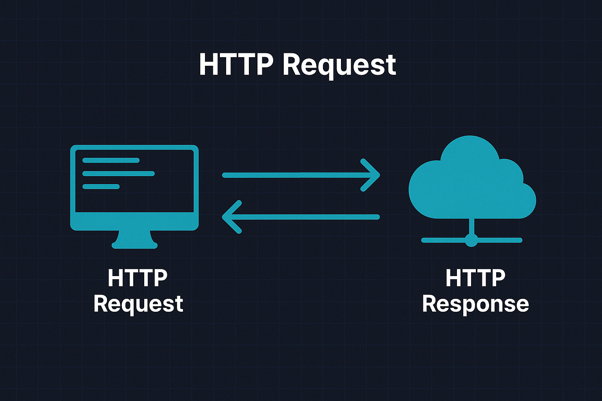
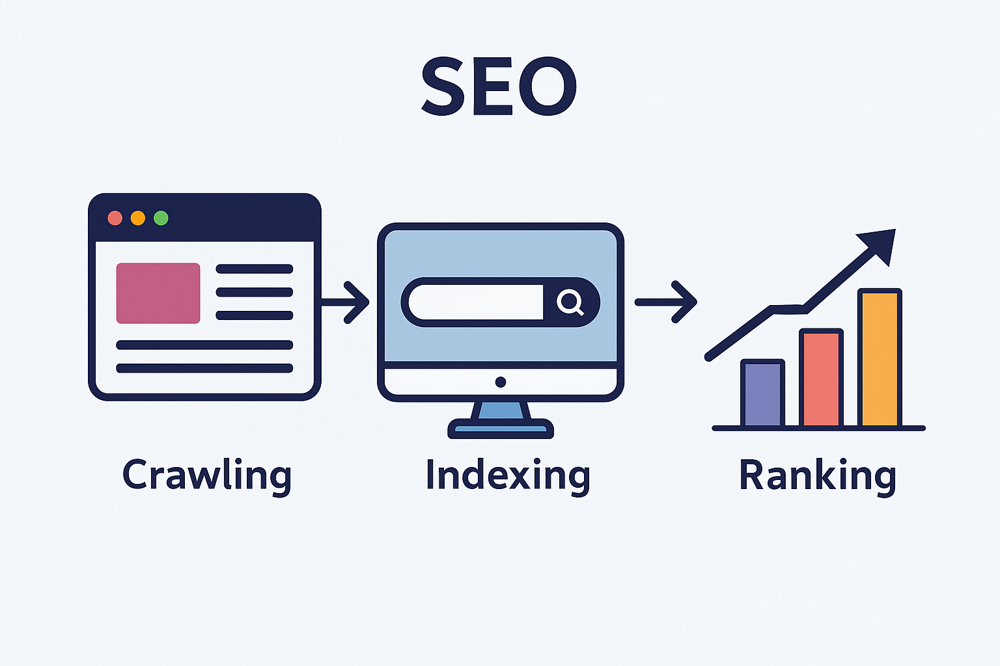
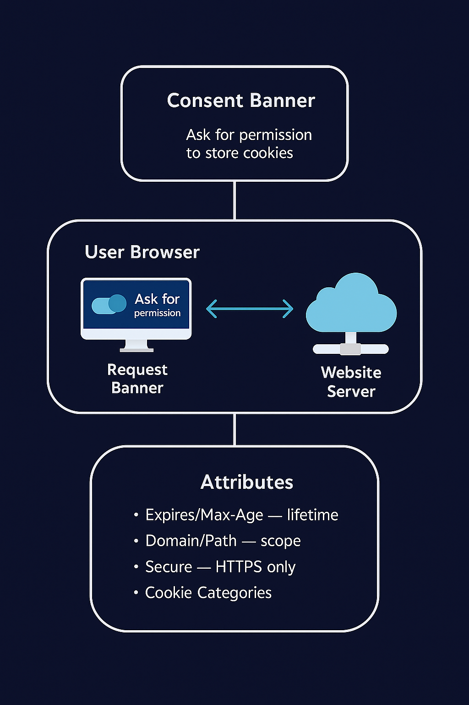

The blueprint for HTTP was written by Tim Berners-Lee in 1989 as part of the original Web proposal;
the first implementation shipped in 1991.
HTTPS is HTTP over TLS—same semantics, with transport encryption and integrity.

Overviews
HTTP
Introduced: 1989–1991 by Tim Berners-Lee and CERN.
What it does: HTTP defines the rules for how browsers and servers
communicate using a request–response model. All actions on the Web—
loading pages, submitting forms, fetching APIs—flow through standardized
methods (GET, POST, etc.), headers, and status codes.
Why it matters: Understanding HTTP is essential for debugging,
backend development, security analysis, and every modern web application.

SEOs
Controlled by: Search engines + site owners.
What it does: SEO (Search Engine Optimization) increases how easily
search engines can discover, understand, and index your content. It involves
improving crawlability (robots rules), content structure, link quality,
performance, and metadata.
Why it matters: SEO directly affects visibility, ranking, and how
users find your site—critical for real-world web projects.

Cookies
Introduced: Netscape (Lou Montulli), mid-1990s.
What they do: Cookies add state to the otherwise stateless
HTTP protocol. They enable sessions (logins), preferences, shopping carts,
analytics, and personalization—controlled by attributes like Secure,
HttpOnly, SameSite, and expiration rules.
Why they matter: Cookies are central to authentication, privacy,
security, and modern regulatory compliance (GDPR, CCPA).
Security & HTTPS
Built on: TLS, certificates, CAs, and cryptographic handshakes.
What it does: HTTPS encrypts and authenticates HTTP traffic,
ensuring confidentiality, integrity, and authenticity. This prevents eavesdropping,
tampering, man-in-the-middle attacks, and browser security warnings.
Why it matters: Modern browsers require HTTPS for powerful
features (Service Workers, geolocation, HTTP/3) and for trust-based interactions
like logins and payments.